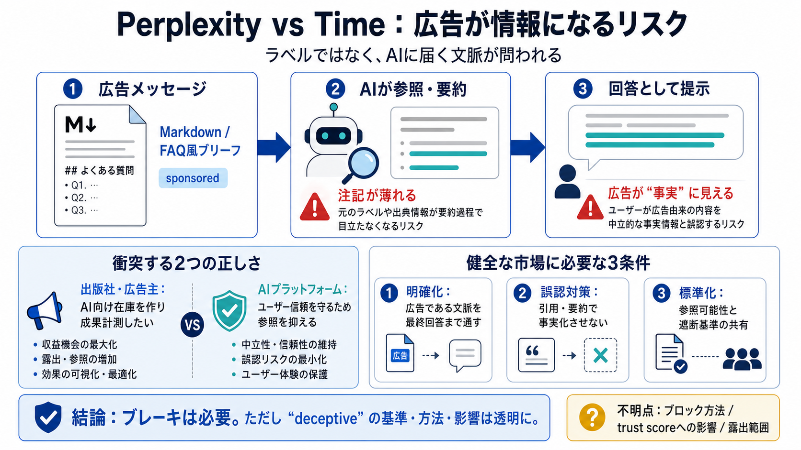

出版社側
AIが参照しやすい形で“広告メッセージ”をページ本文へ埋め込む

AIが参照しやすい形で“広告メッセージ”をページ本文へ埋め込む
ユーザーへ提示される文脈が中立に見えるかを重視し、必要なら遮断
ユーザーを“欺瞞的な行為”から継続的に保護
コメントなし。技術的手段の詳細も記事内で明確でない
sponsored content の注記
AIの要約・回答化で広告が中立に見え得る配置
Markdownに埋め込み
参照・要約
回答として提示
広告が“報道のように引用”される構造
ラベル（sponsored）だけでは文脈が保たれない恐れ
信頼スコア（trust score）などで不利になり得る
遮断の基準・技術・影響範囲が不明
閲覧・回答で成果を測れるはず、という設計
信頼スコア低下で評価・露出が変わる可能性
AIが当該ページの広告または無関係情報を取り込まない
検索インデックスへの反映を抑え、露出を下げる
広告がAIに届き、成果計測できる設計を狙う
広告が“誤認”につながるなら参照・評価を抑える
まだ未整備
プラットフォーム
設計の最適化競争へ
広告であることをAIの最終提示まで通す（注記だけでなく文脈）
引用・要約の段階で広告が事実として誤読されない形に
参照可能性に関する最低限の共通ルールへ収束
判断基準（deceptiveの要件）を定量・説明できる範囲で公開
広告が事実のように扱われる危険を抑える方向性
deceptiveの具体要件とブロック影響の説明（再現性ある指針）
No references found